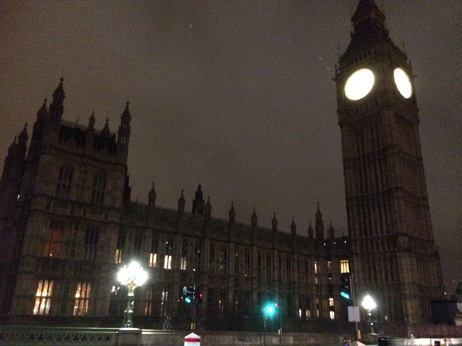

Tuesday was a lazy day with a sleep in. The actuality of the adventure ahead still not quite real. A few last minute decisions before treating myself to a facial thanks to Mary.

The endless time I thought I had until it was time to depart quickly evaporated and there consequently was a mad last minute frenzy of second guessing.
The time to leave the unit was quickly upon us and the first part of our adventure ahead. My first Uber ride. The driver was incredibly genial as I questioned him endlessly about the logistics of being an Uber driver. How much did he work? What lessons did he learn in his first couple of weeks driving? How long had he been driving for? On and on I questioned him. At least the trip when quickly and without that awkward silence that often sets in when using taxis. Before we knew it the International Airport loomed. It was a lovely experience and even though I knew that the Uber fares were significantly less expensive than traditional taxis I was still shocked at the difference. I was disappointed that the lollies and water I'd heard about were nowhere to be found.
Hello Brisbane International Airport!
A reasonably painless transition through check in and customs found us with 2 hrs to kill before our flight. For a strange reason I was craving macadamia and cashew nuts, unsurprisingly the offerings at the airport were not enticing enough to make me purchase some. The pub that was offering sliders and chips, however, was able to get us to part with our money. Next was preparations for the blog. Setting up the page etc. Before long the flight started boarding and we were on our way.

00:50 departure to Hong Kong with a flight time of 8 hrs and 15 min. We were lucky enough to be seated in a pair so the awkwardness of the bathroom breaks were significantly reduced. WIN. The food was surprisingly good and the in flight entertainment great. I have been keen to watch several of the movies on offer. I ticked off a few that Lang had no interest in joining me for. WIN WIN.

2 hr layover in Hong Kong started well.
13 hr flight to London
on check in for the London flight was super disappointed to find that Lang and I were not seated together :-(
Great view from 46E - The back of my head sitting in 45E

3 movies, 2 TV shows, multiple awkward bathroom visits and 13 hrs later we touch down at Heathrow International Airport
Walking out of the plane and across the air bridge at 15:00 local time I was surprised to see the sun already setting. Lazy bastard!
The colours in the London early afternoon sun set reminded me of Roma (QLD)

Our first stop was London Paddington Station. Quick change onto the District Line to head to Earl's Court Station.
Obligatory Selfie
Now onto the Hotel which turned out to be a set of terraced houses combined. The outside was really nice and the staff were very helpful. We were shown to our room and my first impression was magical. I had been warned many times that London hotel rooms were very small. Our hotel room was actually a decent size. It also had a tea making area which was a bonus. The bathroom on the other hand was just amazing. In a “I can fucking believe this is even a thing” amazing.
Just to clarify, that is less than 15 cm between the basin and the wall and the basin and the shower door. Every time I got out of the shower I had to be careful not to damage my lady parts.
No surprise we were up early. I had passed out by 19:30 the night before completely oblivious to the sound of the rumbling underground gently vibrating through our hotel room.
Dressed and out the hotel door just after 05:00 local time (approx 15:00 Brisbane time)
First tube ride of the day
Lang and I touristed the shit out of inner London.
I was shocked when we walked out of Westminster Station approx 10 min later and BOOM! There was Big Ben in all his glory!
21,000 steps later and we had visited:
☁ London Eye
☁ Parliament House
☁ Parliament Square
☁ Downing Street
☁ Trafalgar Square
☁ The Strand
☁ Covet Garden Markets
☁ Leicester Square
☁ SOHO
☁ Piccadilly Circus (Spoiler: There are no clowns or a circus. Turns out that “circus” is a term for a circle of something e.g. houses.)
☁ Green Park
☁ Embankment - Walkabout Pub
☁ The Mall
☁ Buckingham Palace
☁ The Royal Collection Shop
☁ Hyde Park Corner Australia War Memorial and New Zealand War Memorial
☁ Regent Street
☁ Hamley's Toy Shop
☁ Mac Store (sooooo many Red Shirts!!)
☁ Carnaby Street
☁ M&M Store


Nothing opened until 1000 today so we were able to have a sleep in. 0430 as it turns out. Time to give the Jetlag a kick with a light sleeping tablet. 20 minutes later we were both out to again. I still woke up before the 0900 alarm. The light coming through the window was encouraging though as the sun isn't fully up here until after 0800.
Croissants croissants everywhere. Nom nom nom. The daily continental breakfast in the hotel consists of a variety of croissants - plain, chocolate and fruit (pause for effect) did I mention chocolate? The usual suspects of fruit, muesli, yoghurt and toast also available. I was surprised by the fruit. It was actually really nice. The pineapple was sweet. I've never heard good things about the fresh produce in London.
We headed off at about 0930 with a big day planned. First up was Baker Street. *EXCITED*. It was interesting to go to a museum of a person that never really existed. What would they actually have??? Turns out lots of old stuff. Books and items used in the daily lives of those living in the time that Sherlock Holmes and Watson were tailed to have dominated the streets of London. There were also scenes from his books. It was an enjoyable experience, if not a little odd.


Not far up the road from the museum is a Beatles store. Anything and everything you can think of buying they had with a Beatles print on it. Commercialism at its best.
Next onto a red bus like the ones I've seen in photos and pictures my entire life. Camden Markets was a short 15 min ride. There was an excellent view of the terrace houses, pubs and other signs of history. Just when I think I can't be impressed by the beauty of the architecture ... I turn a corner and BOOM. There will be another stunning set of terrace houses framed with enormous naked trees.

Camden Markets reminded me of pretty much any markets around. They sold the same kind of things as you would get anywhere, someone with scarves, glass coasters with famous people, hand bags and a multitude of different types of jewelry. It was the subtle differences that were really interesting. How people interacted and spoke to one another. Food vendors offering a taste of their wares. I walked passed one vendor about 5 or 6 times. Every time he was insistent that his food was the best in the area. While it looked great ... I was looking for something a little more exotic. I found it in the form of an Ethiopian dish. Oh my gawd! It was soooooo good. The beautiful lady behind the counter filled my little square aluminum bowl to bursting. Lentils and chickpeas with fried onion, capsicum and herbs. Houmas to die for and marinated lamb. AHMAYZING!! Best 5 pounds I'd spent.
At about 1500 the Camden Town Tube took us to London Bridge station. A short walk and BOOM! Tower Bridge. The weather had deteriorated to a light mist and a cutting breeze but it couldn't take away from the beauty of the area.

We escaped the weather for a little while by ducking into a side street that had a pokey little cafe called The Tea Pod. Friendly staff, free Wi-Fi, lovely green tea and a homey feel made it the perfect place to warm up, exchange notes and do some blog work.
About 40 minutes later we exited the shelter of the cafe to find the weather had cleared up. The rain had departed leaving a clear crisp feel behind. The sun had set so Tower Bridge and the surrounding commercial zone More London was given the opportunity to dazzle us with their Christmas Festivities. It was quite breathtaking.


Next up to the viewing platform of The Shard.
I was surprised by the amount of security measures. It was only slightly less intrucive than going on a plane.
The view was rather breathtaking.


A quick discussion lead us back to Earl's Court for dinner. Time to try one of the local pubs. While the service was slower than my preference I could not fault the food. My pate was delicious and Lang's Pastrami burger was excellent.

Once again I was quickly in struggle town. These early starts were really killing my desire to stay out late. As I stumbled into bed at about 2100 I smashed my toes into the middle support for the bed. OUCH doesn't even begin to describe it. Gawddamnit.
Awake stupidly early again this morning. Today we didn't fight it. It was a long trip out to our destination. As the day progressed there was plenty of evidence that I was not as awake as I thought I was. The first blatant indicator was finding my fly down on my jeans while changing trains at Paddington Station at about 0600. Sooooo I'd been walking around for a good 45 min like that. *facepalm*
After sorting tickets out to Swindon Station where we would pick up a hire car we sat down on the coldest seats on earth to enjoy some breakfast. It surprises me every time I see a dog in a train station. Why can't we take dogs into / onto our trains???
I had hoped to see some lovely country side during our hour trip from London to Swindon. This was of course before I knew that the sun barely puts in a show during the winter months. So consequently choosing an arrival time of 0750 into Swindon meant that we saw nothing but darkness. *Good work Zoe*.
We were greeted with awesome British weather ... cold drizzle and ball shrinking cold wind with no sun in sight yet. The original plan had the cheap choice of a bus over to the Avis pick up center. With a 20 min wait until the next bus arrived we quickly and decisively chose to take a cab. BEST. DECISION. EVER.
I had secretly hoped that we would be upgraded from the tiny little automatic Fiat I had booked to something a little more majestic. I was pleasantly surprised to find out that we had indeed been upgraded. Not to a comfortable sedan but a 7 seater Citron people mover ... manual. Remember the bit where I smashed my toe last night?? On my left foot?? … yeeeeaaaaahhhh. SHIT!
On the upside this thing was flash as!!! Push button start, auto lights and windscreen wipers and a weird park break button that freaked the shit out of me every time I had some arsehole up my clacker on a hill.
We spent about 15 min getting our bearings and headed off. Within minutes I was introduced to the Magic Roundabout of Swindon. These people are nuts! I've driven in Thailand. I know nuts but this shit takes the cake!

After a couple more death defying feats we made it out into the countryside headed to Stonehenge. The motor way was comfortable cruising along at comfortable 60mph ... All of a sudden a roundabout ... in the middle of a motorway ... Whhaaaaaatt?!?!?! This happened several more times ... ocassionally it was a set of lights on a roundabout just to keep us on our toes. How i'm not grey after that trip i&os; never know.
40 minutes of random roundabouts and striking countryside driving later I came across my first triangle warning sign with a tank on it. Yeah. “Look for tanks” is an actual thing in this part of the countryside. Who knew?!?!

After that little corker we decided to stop for second breakfast (apparently when you are up at 0430 it's a real thing) in Tidworth. Monty's diner would affectionately be described as a dive cafe. However, the service was amazing. So friendly and helpful. The food was great. They even made me an excellent strawberry milkshake from scratch. DELICIOUS!!
Another 40 min drive and we crested a rise in the road to have Stonehenge just sitting there on the side of the road. BOOM. After all the chat about it being smaller than you would think Stonehenge ended up being larger than I expected. It was a bizarre feeling while looking at it. Trying to fathom the time that had passed by while this structure stood there. My feeble little brain nearly exploded so gave up and decided to pull out the selfie stick. CLICK CLICK BOOM!
Out of the chilly wind and onward to Bath.
I have no words to describe the town. Well, I have a few but they certainly don't do it justice. I wonder if in the future anyone is going to feel the same way about our glass monstrosities as I did about the architecture in Bath.
Now, remember the car we had from Avis? The people mover?!?!? The very large vehicle compared to what we had ordered?!?!. Yeah so turns out that bath is full of small winding streets and therefore parking is at a premium as there isn't much space. So now picture the two of us trying to park this monstrosity of a vehicle with no knowledge of its turning circle or how long it was in the tight little structures they called parking lots. Yeah ... the word *awesome* can't possibly hold enough sarcasm to describe that little *adventure*. We made it in the end but wow stressful much?!?!?!?!
Christmas lights and markets were everywhere. It really was quite spectacular. I highly recommend the 15 pounds for the Roman Baths museum. It is really quite fascinating what they accomplished so long ago. I must also give a shout out to the actor playing the part of Marcus Aufidius Maximus. I questioned him endlessly. Cheers Marcus!
We left Bath at about 1500 as the sun was starting to set and headed back towards Swindon to friends from my Rocky days, Trin & Bec. 4 hours of gossiping, a full belly of fresh baked biscuits and Indian we headed back to Avis to drop off the people mover ... through the Magic Roundabout again and via several diversions due to roadworks all through the wonderful British weather. In short, it was pissing down. Marvelous.
We made it and again opted for the convenient option of a cab back to the station. Just in time to board the next train back to London. These two pertuckered travelers struggled their way back to Earl's Court to flop into bed at midnight. That was a big day.
A marvelously lazy sleep in til about 0800. We spent the next hour or so laying around talking about our plans for the day, catching up on Facebook and emails until the call for breakfast finally pulled us out of bed.
After recharging on more croissants, fruit and yoghurt we headed out. A quick tube ride to Green Park Tube Station and a short walk through Green Park we were on our way to Buckingham Palace. I had my first encounter with a squirrel during the walk. Oh my gawd!! So cute. I seemed to be as interesting to the squirrel as he was to me … well … until I had visions of it jumping at me and mimicking the rabbit out of Monty Python's the Holy grail. Have since been advised that England doesn't have rabies. Apparently.
Anywho onwards for the changing of the guard. Wow. They take marching around for no apparent reason really really seriously. There were two bands … because … one apparently isn't enough. About 30 min into the marching and yelling one of the bands busts out a couple of Star Wars songs … yep. You read that correctly. By this time the crowd was very fidgety after standing for at least 40 minutes in tight quarters. Maybe they could feel that they were losing us …
Next was a leisurely stroll through St James' Park. Spectacular. I can't imagine how beautiful it would be in summer. The park was full of squirrels, geese, ducks, water birds and even some pelicans! Though I've never seen a pelican with a mullet before. Punk pelicans??
During our search for some lunch we stumbled upon the House Cavalry Museum. Lots of enormous statues of old dudes on majestic horses. Pretty cool actually. Especially when we walked out the front and they had 2 horses and their riders in full uniform there … and you could take photos with them!! *SQUUEEEE* I'm sooo happy right now!
Across the road was a great looking pub. SOLD. Turned out to be a great decision. The service and food were brilliant. Beautiful building well refurbished.
After recharging and giving the feet a rest we headed out to meet some distant relatives. My dad's, father's, second wife's, brother's adopted daughter and her family. Did you get that? It's ok if you need to go back and read that again. I did. Multiple times.
Sue and Clive live out in Balham. Cute little suburb about 20 km from the London center. Their house, a skinny but very tall building was lively to say the least. 3 dogs a cat and 4 grown sons in various stages of living arrangements. The house was warm and welcoming as were Sue and Clive. The 3 hours we had to spend there disappeared in hearty discussions of politics, law and compliance, travel stories and homemade fruit mince pies.
I'll be honest that I was dubious about meeting people I had never communicated with before this trip. It was however an extremely pleasant way to spend the afternoon. We departed late in the afternoon with offers of accommodation should we ever find ourselves in London again. I hope they will visit Australia in the future. I look forward to discussing their experiences in my country.
We headed back to Earl's Court for date night. Take away from a Lebanese restaurant and a mundane but essential task. Clothes washing. An hour later with clean knickers and a full tummy I followed Lang back to the hotel.
I need to mention that I will never complain about Australian Free to Air television again. UK free TV is horrific. Full of ridiculous “reality TV” doing nothing but invoking responses from people by being mean or contrary for no other purpose than to make other people feel bad. Yuck. At least I managed to stay awake for a couple of hours doing some writing until by 2200 I couldn't keep my eyes open any longer.
No surprise another early start. Though as I came to the rumbling of the underground told me it was at least 0500. I could tell Lang was awake too by the fidgeting. The man doesn't move at all when he is asleep. Several times over the years I've had to give him a poke in the ribs just to make sure he is even breathing.
There wasn't much to do but trawl through Facebook until breakfast started at 0700.
Full of croissant goodness we headed out for our last full day in London. We arrived REALLY early in at Kew Station and after another Lang's London Tour adventure we found the entry to the Gardens. An hour and a half before they open. I had thought that there would be open areas, nope. A 3 meter ish brick fence surrounds the gardens. With nothing better to do we strolled the laneways ogling the opulent houses and cars parked in their driveways while we looked for a cafe to warm up in.
A pot of tea and some writing later we were outside the gates at 0950 with others impatient to gain admittance. We strolled through the winter wonderland awe at the delicate beauty. Before departing we looked on the map to get an idea of how much ground we had covered I was amazed to find that after 4 hours of walking we had barely scratched the surface. We were leaving with at least 75% of the gardens untouched. I could have continued for the rest of the day but the British Museum awaited.
Another 3 hours of looking at pieces of history and I had the same sinking feeling as at the end of Kew Gardens. I may never have the opportunity to see it all.
Souk Restaurant
Waxy O'Connor's
Hotel
Packing